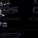

比 Phantom 慢，但擁有極長射程的狙擊模式，可攻擊遠距離敵人。
| 名稱 | 技術等級 | 能量消耗 | 說明 |
|---|---|---|---|
| UCD 安瓿 | - | - | 治療人類單位 |
| MCD 安瓿 | - | - | 治療機械單位 |
| 隱形裝置 | - | - | 隱形 |
| 懸浮 | - | - | 不留腳印 |
| Clock-EF | 56 | 45 KJ | 低耗能隱形裝置，適合長時間隱形 |
| 名稱 | 技術等級 | 攻擊力 | 射程 | 射速 | 攻擊模式 |
|---|---|---|---|---|---|
| Sniper Gun | 1 | 300 | 45.0m | 3.0s | 地空 |
| Sniper Gun-Sharky | 59 | 350 | 45.0m | 3.0s | 地空 |
| Sniper Gun-Moby Dick | 117 | 480 | 50.0m | 3.5s | 地空 |
| Sniper Gun-Eagle | 133 | 540 | 50.0m | 3.5s | 僅對地 |
資料來源：Ever☆Zone Tistory /117